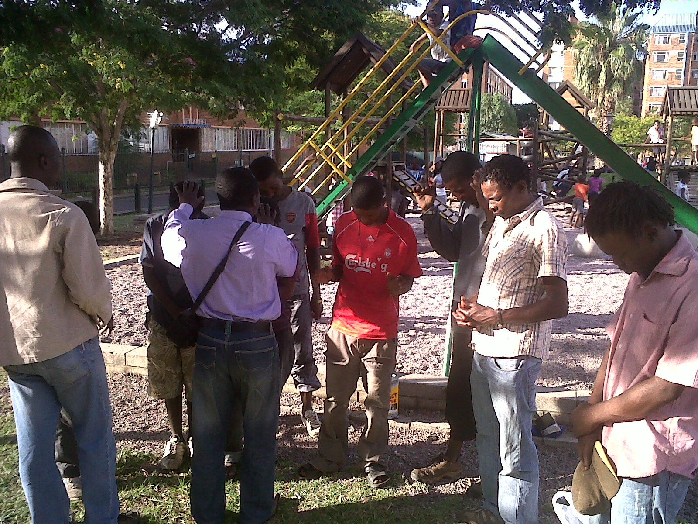
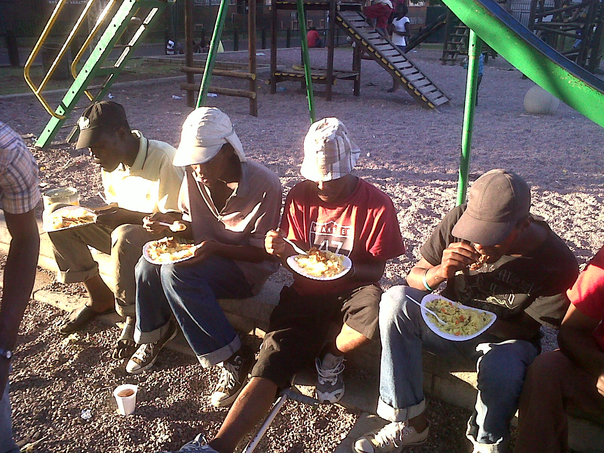
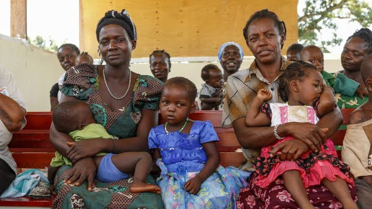
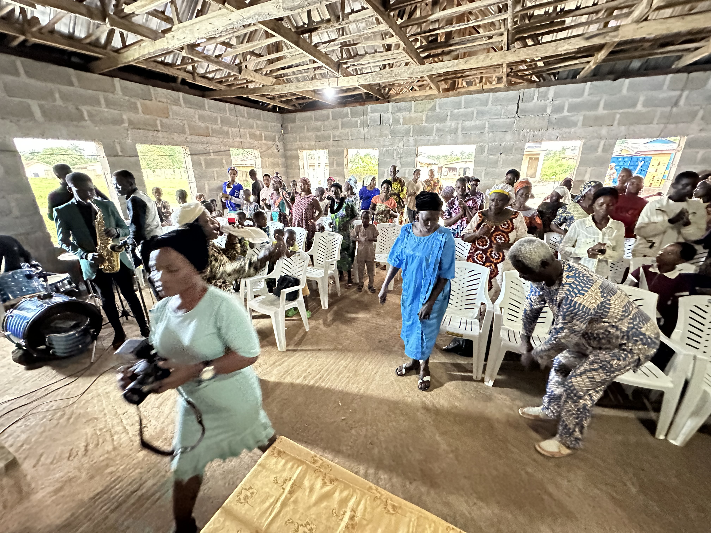

W e are fundraising focusing on Save Africa Abandoned and Molested Children initiative of the River and Tree of Life Foundation (RATOLF). RATOLF is an NGO registered in United States, South Africa, and Nigeria, to launch an emergency clarion rescue call to alert the world on the neglect of the molested and abandoned children of Africa. This is much more alarming in the ghetto/rural based areas of the country.
I nitially, the Founder Remmy-Green Adekunle Peter and Co-Founder Mwaka Peter have been the sole sponsors of most of RATOLF’s community engagement activities for the past fourteen years (14yrs). Through RATOLF we have been paying the school fees of several children in Nigeria, helping, and feeding the homeless in South Africa and Nigeria.

ONE NATION AT A TIME
Our focus in 2024-2025 is on Nigerian abandoned and molested children. We will roll out in other African countries in the future.
However, the need for support has grown beyond the capacity of an individual if we want to achieve the objective of the initiative. Therefore, we are calling for your support and donations to help these children.

SPONSOR A CHILD
PROGRAM
We believe in the potential of every child and that education is the key to unlocking that potential.
You can also join the initiative Save Abandoned and Molested Children in Africa today. With just US$ 20 per month, you can give children in need access to educational opportunities and support their journey towards a brighter future. Help Change a life today!

|
Mission for
2024-2025: To sponsor 300 students |

|
RATOLF’s project will initially train 10 local leaders to facilitate agency-based empowerment workshops and support 300 vulnerable girls and boys with tuition fees, school supplies, food, and counseling. We want these children to discover their talents and develop the discipline to pursue and live their dreams.

Ongoing activities: Helping homeless people in Virginia
Your gift will help transform the lives of thousands of adults living in homelessness in our community. Therefore, you can donate today, support the homeless and vulnerable people, by so doing your gift can save lives. Our mission is to provide resources to the homeless people.

The Challenge
There are many abandoned and neglected children in Africa. Most of the children are from poor homes and disadvantaged communities and have either lost their parents or were living with guardians who maltreated themand for some, they have been forced to the streets.
Many of these girls, boys, and teenagers have been exposed to sexual abuse and are victims of rape and different kinds of abuse. There are incidents of fathers raping their daughter(s), and uncles raping girls put under their care.
These types of abuse and neglect have left lasting scars on these abandoned children. Some of these scars might be physical, but emotional scarring might have long-lasting effects throughout life, damaging a child’s sense of self, future relationships, and ability to function at home, work, and school. Some of these scars still affect them even when they get married. We believe that through prayers, the word of God, and Biblical counseling, the scars in the heart of abused and neglected children be cured or dealt with.


RATOLF will carry out the following strategies in the implementation of our project:
-Investing in Save Abandoned and Molested Children in Africaby growing the Child: Our focus initially is on abandoned children in Southwest Nigeria. We are increasing access to and the quality of education by supporting the re-enrollment of out-of-school children so that more children can have an education. We will provide child-friendly spaces where children can learn, plan and receive the support they need to recover from trauma facilitated by our trained leaders.
-
Transformational Skills:
For older children, they need entrepreneurial skills, and it should not just be a skill, but skills that are transformational into monetary / prosperity value. Some will be sponsored for other vocational training as part of our empowerment program.
-
Train the Trainer Program:
From time to time as need occurs, we will training to program facilitators who provide relevant knowledge to those who they are guiding, coaching, and or mentoring.
-
Communication Material:
Printing of campaign posters, handbills, literature materials, videoadverts and other forms of information materials in the communication of our efforts to Save African children.
Join us in supporting abandoned African children by donating. Your contribution will go a long way to rescue and send a child to school.

|

|

|
: ratolf.usa@outlook.com |
Follow Us

"Being generous often consists of simply extending a hand. That's hard to do if you are grasping tightly to your righteousness, your belief system, your superiority, your assumptions about others, your definition of normal."
OUR LATEST ACTIVITIES
- 
- 

- 
- 


|
RIVER AND TREE OF LIFE FOUNDATION ZENITH BANK PLC, NIGERIA
Account number: 1016970831Branch sort code: 057080028 Swift Code: ZEIBNGLA. |
RATOLF DONATION
Get involve

 Secure Donation
Secure Donation
Amount
Secure Donation

Test Give with Test Donation Gateway
Secure Donation